MatchlingBaby names
Find a name you
both love.
Explore names and meanings, keep your own favourites, and find the names you both love.
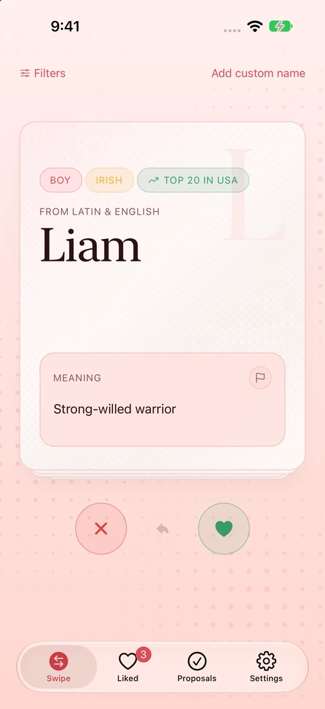
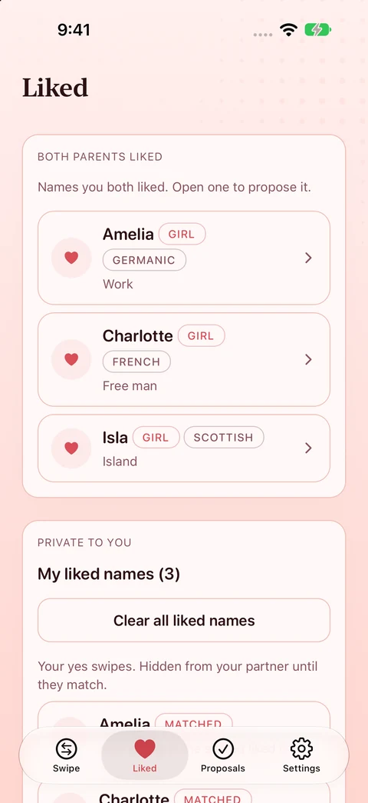
Find a name, share the chores, keep a record of the little things. Five apps, each with a job of its own.
Explore names and meanings, keep your own favourites, and find the names you both love.


Feeds, sleep and nappies in one shared timeline, so the next carer knows where to pick up.
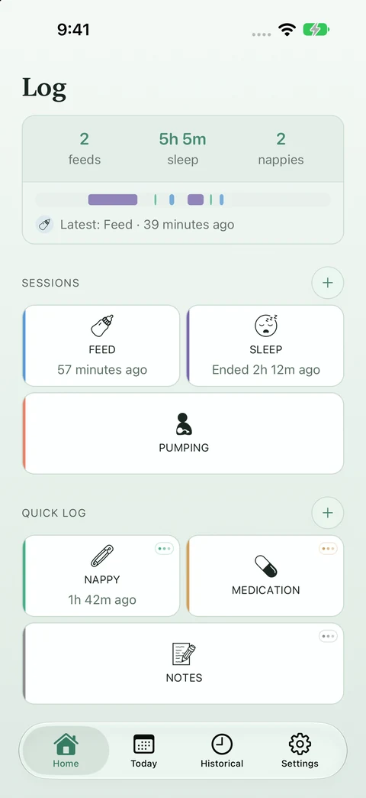
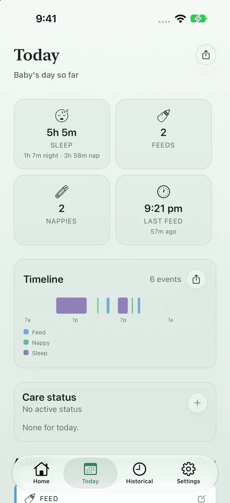
Built for partners sharing a home: recurring jobs, reminders and a history of who last did them.
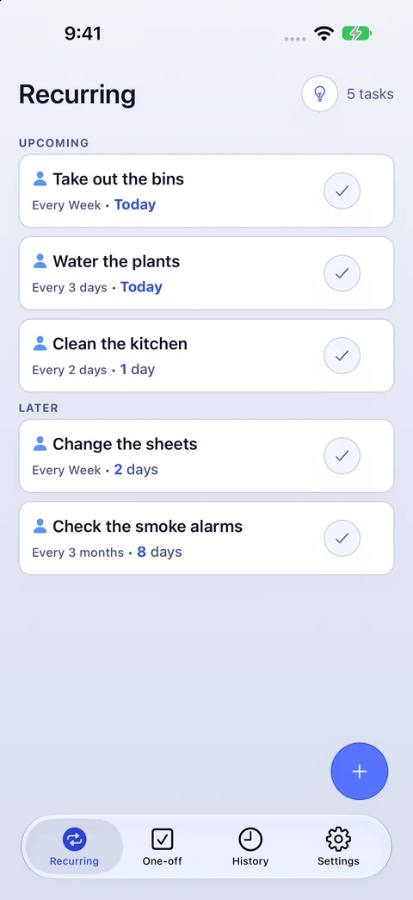
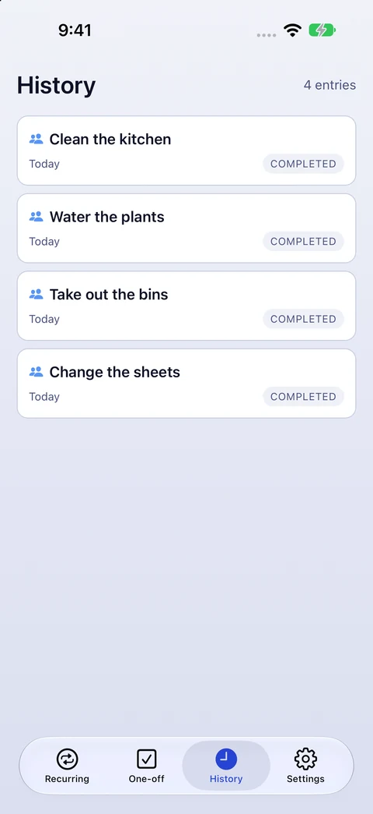
Small photo-review sessions, a recoverable queue, and a final check before removal.
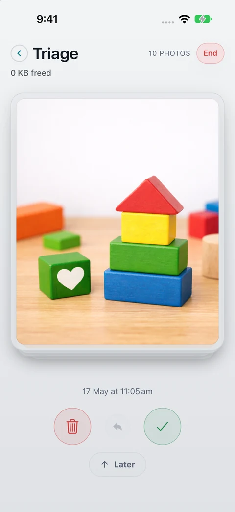
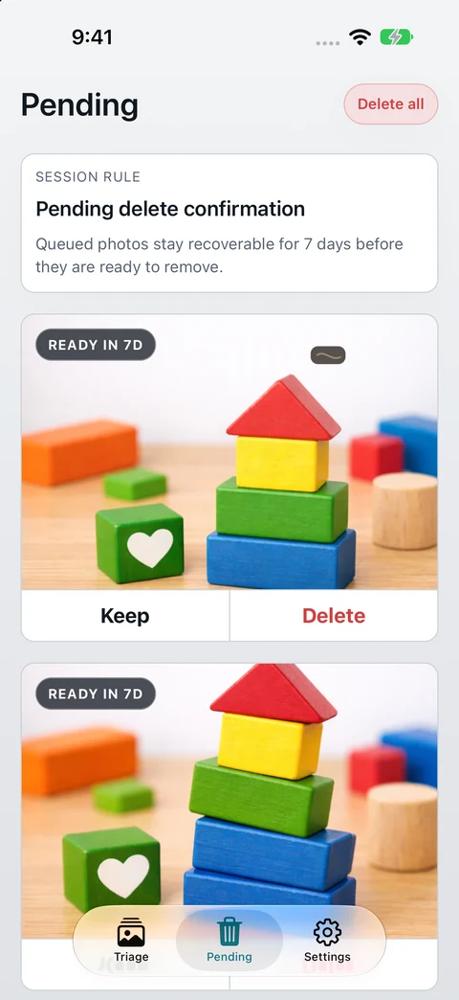
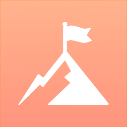
Turn household chores into quests, with points, ranks, achievements and family rewards.
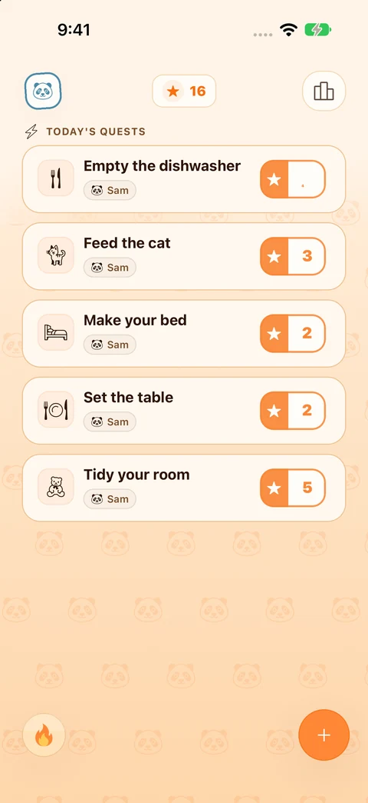
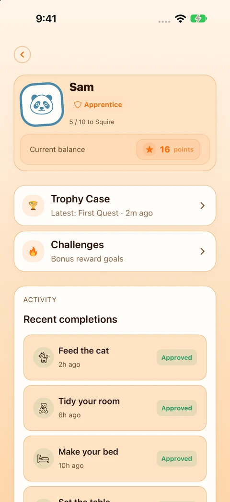
Meet Sudokling and Scrambling: two different ways to put your mind to work.
Explore the games